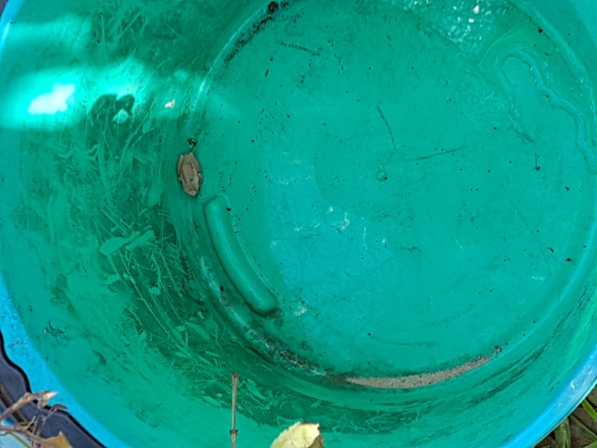

Welcome to the 'Bob the Frog' site. Who is 'Bob the Frog' you ask? 'Bob the Frog' was first found in a bucket in the Eastern suburbs of Melbourne. 'Bob the Frog' is a Southern Brown Tree frog (Litoria ewingi - this is Bob's scientific name). Bob was a nickname given to this little frog when found. 'Bob the Frog' can also be known as Ewing's Tree Frog, Whistling Frog or the Brown Tree frog.
What does 'Bob the Frog' actually look like?
'Bob the Frog' has brown colourings, but these frogs can come in colours from cream, orange, pale fawn to light brown. This frog has a brown stripe that runs from its eye to front leg and a brown band that begins between the eyes and runs down the back. 'Bob the Frog', the Southern Brown Tree frog has webbing that goes half-way up their toes and their fingers do not have webbing between them at all.
'Bob the Frog' lives on a diet of insects such as flies, moths and mosquitoes. Southern Brown Tree frogs are excellent climbers and can sometimes be seen on windows or walls when hunting for their food (these frogs are attracted to lights that attract insects). Being such good climbers, they can even be found inside in bathrooms or bedrooms! 'Bob the Frog' can leap up to a metre to catch food in mid-flight.
'Bob the Frog' is a native of Southern Australia, found commonly in Victoria, South Australia and Tasmania. Normally 'Bob the Frog' would not live in a bucket but could be found under a log, rock or under leaf litter in the bush, marsh or swamplands and in suburban gardens. 'Bob the Frog' was given time to move from the bucket to some leaf litter in the same area of this garden. Note, the Southern Brown Tree frog can also live in drier areas away from water.
Green Southern Brown Tree Frog, CSIRO, CC BY 3.0
Hop to Top
Other Froggy Stuff
Southern Brown Tree frogs breed in late Winter to Spring and even in Autumn. Females lay their eggs attached to reeds, underwater grasses or sticks just under the surface in still or slow flowing water such as dams, flooded roadsides, streamside ponds and pools.
Once eggs have been laid the offspring of 'Bob the Frog' take around four to six days to hatch. The tadpoles grow into frogs in around 12 to 26 weeks. The tadpoles are coloured from pale grey to golden and if disturbed will dart away out of sight to hide. The tadpoles grow into a frog that is between 2 to 4.5cm long. Just for a twist the Green Souithen Brown Tree Frog, as seen here in the picture, can be found in Victoria's Western District and in South Australia up through to Adelaide.
'Bob the Frog' and other Southern Brown Tree frogs are susceptible to herbicides and disease. So what can we do to help frogs like 'Bob the Frog'? Aviod using herbicides in your garden or even pouring them down the drain. If you find frogs or tadpoles leave them where they are and don't handle them. Handling frogs can cause the amphibian fungus called the 'Chytrid Fungus' to spread that can lead to declining frog populations.
'Bob the Frog': the Amazing Little Frog

'Bob the Frog' in the bucket, c2019 RJ Sanders